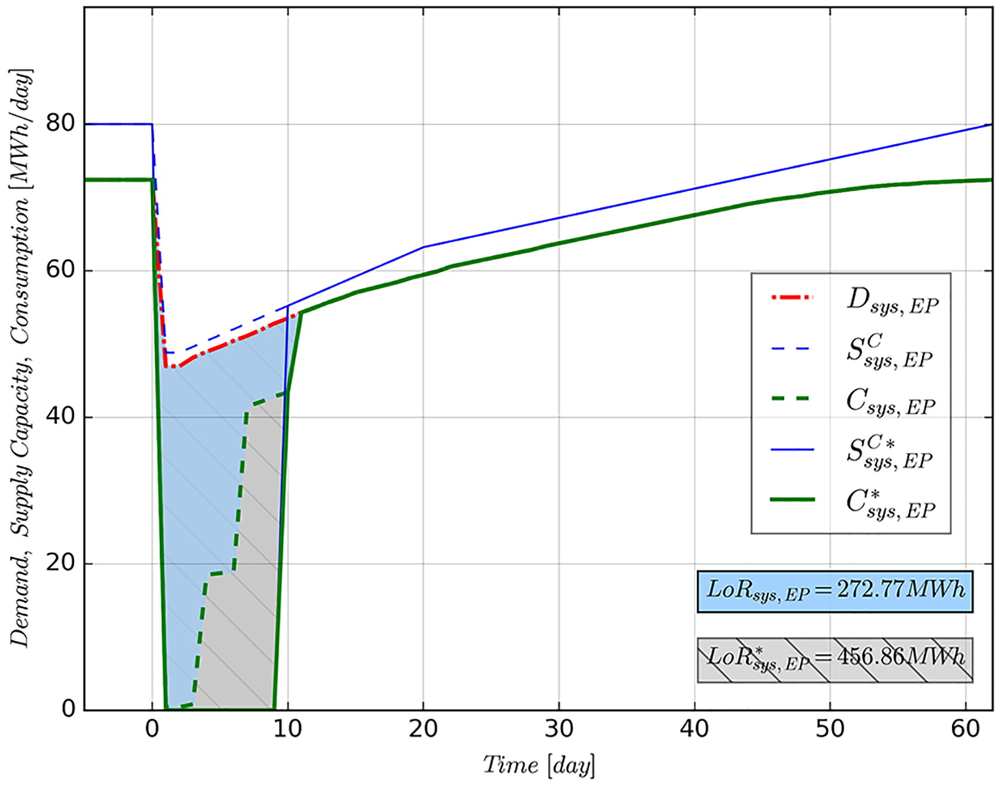
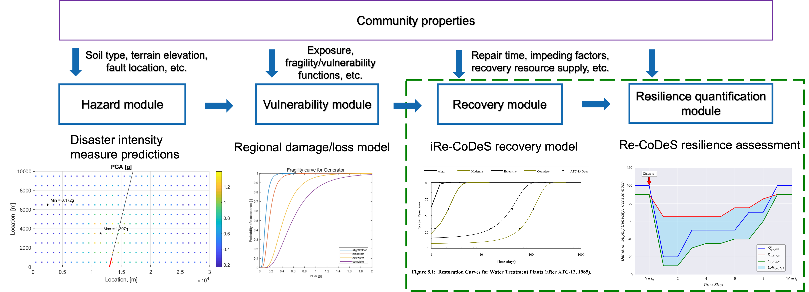
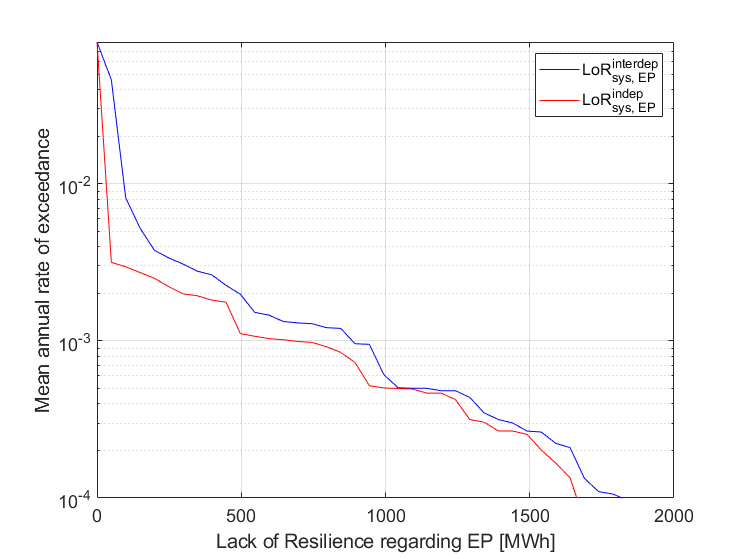
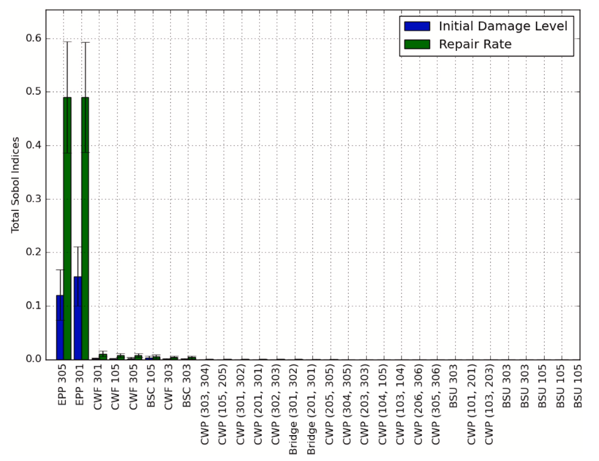
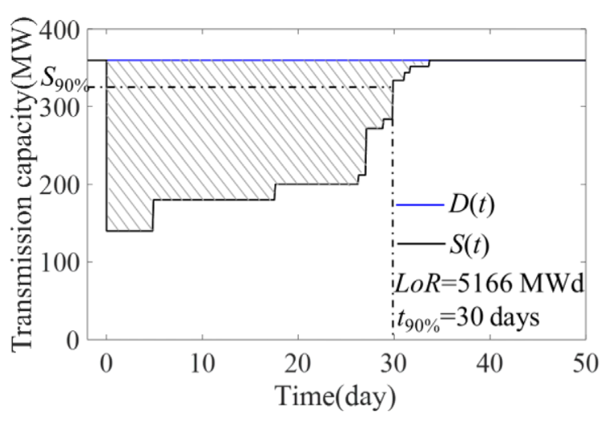
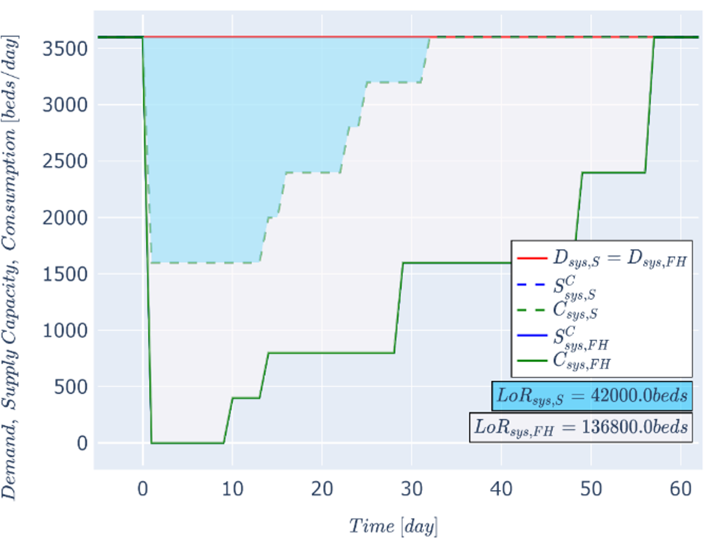
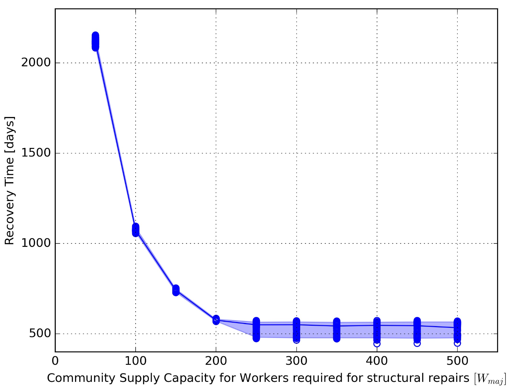
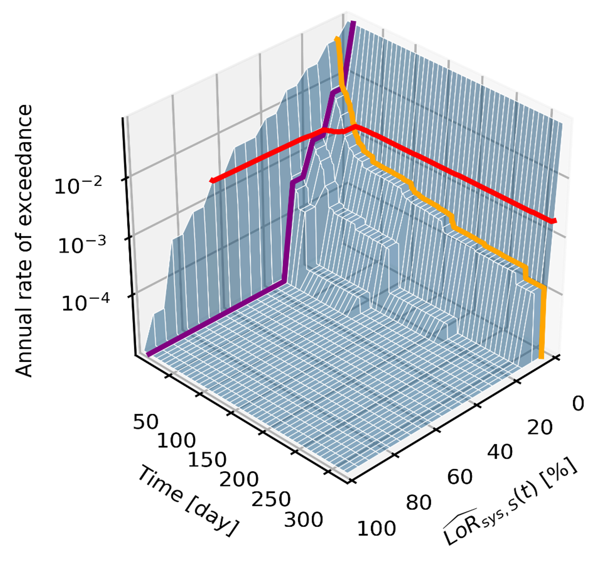
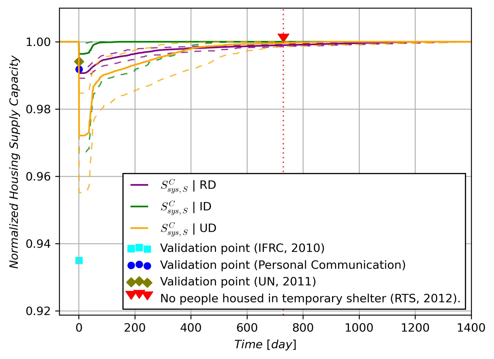
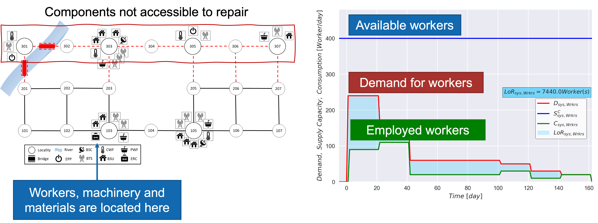

pyrecodes is an open-source object-oriented Python library for regional disaster recovery simulation and disaster resilience assessment of the built environment.
The iRe-CoDeS framework for disaster resilience quantification discretizes a system into components and simulates the change in components’ supply and demand for various resources over the post-disaster recovery period. Components’ interactions are captured by simulating the flow of operation and recovery resources among components and conditioning their ability to operate and recover on their resource demand fulfillment. System’s resilience is then assessed by contrasting the post-disaster system-level evolution of supply, demand and consumption of various resources and identifying the magnitude and duration of unmet resource demands in the system.
capture cascading effects caused by interdependencies among infrastructure systems following a disaster [link]

Supply, demand and consumption of electric power after a scenario earthquake in the virtual community. Dashed lines represent supply/consumption dynamics withouth considering infrastructure interdependencies, while solid lines include interdependencies. Gray LoR area marks the unmet demand for electric power caused by infrastructure interdependencies.#
conduct scenario-based seismic resilience assessment of a virtual community by integrating iRe-CoDeS with ground motion models and HAZUS fragility and recovery functions [link]

Workflow of resilience assessment in iRe-CoDeS extends the traditional regional risk assessment by simulating recovery and quantifying resilience.#
conduct probabilistic seismic resilience assessment of a virtual community and obtaining risk-based resilience metrics [link]

Probabilistic resilience assessment results in assessing the mean annual rate of exceeding a certain value of a Lack of Resilience (LoR) - the unmet demand for a resource, here electric power, during the resilience assessment period.#
quantify component importance for disaster resilience of a system using Sobol’ indices and a heuristic upper and lower-bound search [link]

Component importance ranking for the resilience of an electric power supply system.#
assess seismic resilience of an electrical substation [link]

Resilience assessment of an electrical substation using the iRe-CoDeS framework.#
NIST resilience goals can be assessed using iRe-CoDeS by defining functionality of a system as the percent of met user demand for a resource provided by the considered system.#
assess housing resilience of a virtual community exposed to seismic hazard [link]

By treating housing as a resource provided by the building stock, iRe-CoDeS can assess housing resilience by looking at post-disaster housing supply/demand dynamics.#
assess the adequate post-disaster supply of recovery resources for the city of Kraljevo, Serbia to improve its seismic resilience [link]

Relation between recovery resource supply, in this case workers, and recovery time can be assessed using iRe-CoDeS.#
enable risk-informed resilience assessment using Lack of Resilience surfaces [link]

Example of an LoR surface showing the annual rate of exceeding a certain percent of unmet resource demand (i.e., the LoR) at each time step of the simulated recovery process.#
compare the iRe-CoDeS seismic housing resilience assessment with a real-life post-earthquake recovery of the city of Kraljevo, Serbia [link]

Comparing the iRe-CoDeS seismic housing recovery estimates with the observed housing recovery data from the 2010 Kraljevo, Serbia, earthquake.#
simulate recovery impeding factors and the effect of regional resource constraints on the recovery of San Francisco following a hypothetical earthquake [link]
Relation between recovery resource supply, in this case workers, and recovery time can be assessed using iRe-CoDeS.#
capture the impact of transportation infrastructure on community disaster resilience in a virtual community [link]

Post-disaster inoperability of the damaged transportation infrastructure prevents access to damaged components, delaying their repair and preventing the mobilization of available workers.#
By integrating F-Rec building-level recovery models into the regional iRe-CoDeS recovery model we capture recovery resource constraints on a building component level at each floor in the entire region.#
More information on the iRe-CoDeS framework can be found here.